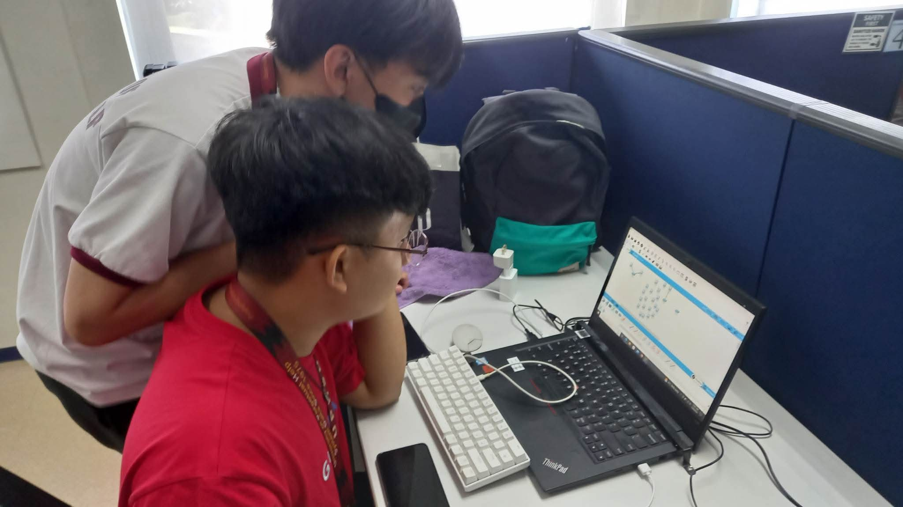

Grade 12
ICT Learner
NYK-Fil Maritime E-Training, Inc.
Completed an 80-hour work immersion program as a Grade 12 ICT learner at NYK-Fil Maritime E-Training, Inc.
- PROGRAM
- Work Immersion
- DURATION
- 80 Hours

IDEAS. CODE. POSSIBILITIES.
Vincent Rafael Garcia. Turning ideas into thoughtful, practical digital experiences.
01 / THE PERSON BEHIND THE CODE
I’m a web and software developer striving for new opportunities to learn, create, and contribute to meaningful digital experiences.
I’m looking to develop my skills, take on new challenges, and work alongside people who care about what they build.
02 / MY JOURNEY
Learning through
real-world experience.
NYK-Fil Maritime E-Training, Inc.
Completed an 80-hour work immersion program as a Grade 12 ICT learner at NYK-Fil Maritime E-Training, Inc.

03 / A SPACE FOR WHAT’S NEXT
PORTFOLIO SHOWCASE04 / THE TOOLS I WORK WITH
FOR THE WEB. AND BEYOND.Structure
Style & layout
Interactivity
Server-side development
Software development
Code & collaboration
Relational databases